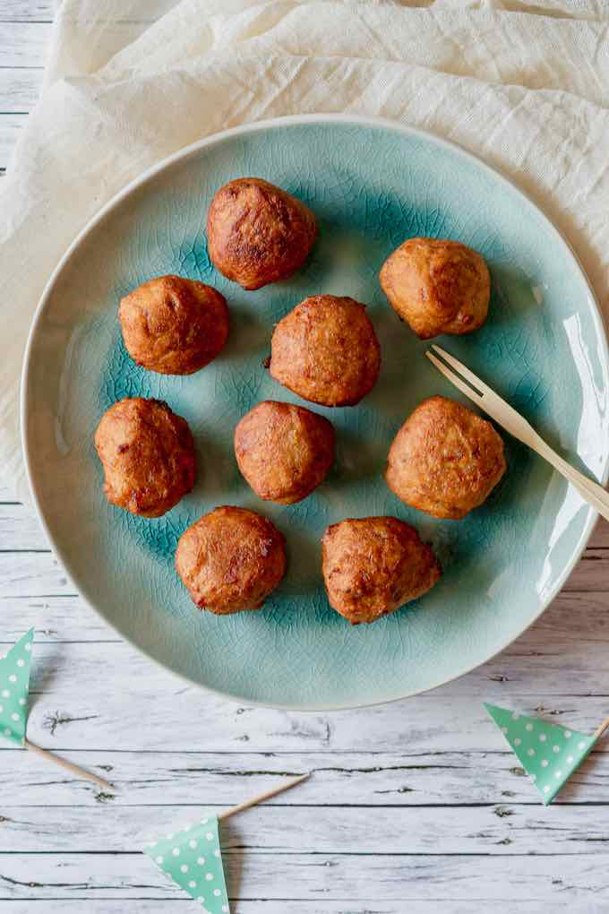

Kakro

DESCRIPION
Kakro is a Ghanaian traditional snack made from ripe plantain fritters.
INGREDIENTS
- 4 plantains (very ripe)
- 1 cup all-purpose flour
- 1 small onion , finely grated
- 1 tablespoon chopped fresh ginger
- 1 teaspoon salt
- 1 teaspoon Cayenne pepper
- Vegetable oil
STEPS
Peel the plantains and place them in a bowl.
Mash them with a fork until obtaining a lumpy mixture.
Add the onion, ginger, salt, cayenne pepper and mix well with a spatula.
Add the flour and mix well.
In a deep skillet, heat a large volume of oil over medium heat.
Using a spoon, take some of the dough and dip in hot oil.
Fry on both sides until golden brown.
Place kakro as you go on a sheet of paper towel to remove excess oil.
Serve hot or warm.